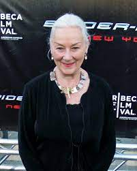

| Atores |
Imagem |
Personagens |
Biografia |
| Kirsten Dunst |
|
Mary Jane Watson |
Kirsten Caroline Dunst(30 de abril de 1982 ) é uma cantora, atriz e modelo norte-americana. Ela fez sua estreia no cinema em Oedipus Wrecks, um curta-metragem dirigido por Woody Allen para a antologia de New York Stories. |
| Tobey Maguire |
|
Spider-Man/Peter Parker |
Tobias Vincent Maguire (27 de junho de 1975), mais conhecido como Tobey Maguire, é um ator e produtor cinematográfico americano que iniciou sua carreira no final da década de 1980
|
| J. K. Simmons |

|
J.J. Jameson
|
Jonathan Kimble Simmons(9 de janeiro de 1955), é um ator estadunidense, vencedor do Oscar de Melhor Ator Coadjuvante pelo filme Whiplash.
|
| Cliff Robertson |
|
Ben Parker |
Clifford Parker Robertson III(1923-2011), conhecido por Cliff Robertson, foi um ator estadunidense. |
| James Franco |

|
Harry Osborn
|
James Edward Franco(19 de abril de 1978) é um ator, diretor, roteirista, comediante, produtor cinematográfico, escritor e professor norte-americano |
| Rosemary Harris |

|
May Parker |
Rosemary Ann Harris(19 de setembro de 1927) é uma atriz inglesa conhecida pela personagem Tia May da série de filmes Homem Aranha. Foi indicada ao Oscar de melhor atriz coadjuvante em 1995 por Tom & Viv |
| Willem Dafoe |
|
Duende Verde
|
William James "Willem" (22 de julho de 1955) é um ator americano, com atuações nos filmes Platoon, Speed 2: Cruise Control, Homem-Aranha e Mr. Bean 's Holiday. Também atuou na comédia The Life Aquatic with Steve Zissou.
|